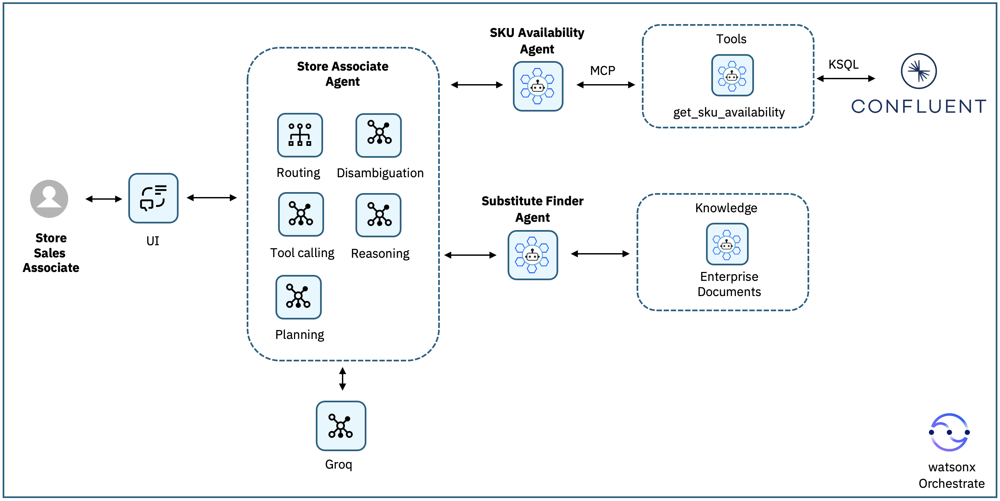

アーキテクチャ概要¶
システム全体の構成¶
このシステムは以下のコンポーネントで構成されています。
Confluent Cloud（Kafka）¶
| トピック名 | 説明 |
|---|---|
inventory.transactions |
在庫増加と販売（負の数量）の JSON トランザクションイベントを格納するソーストピック |
inventory.availability |
SKU・ブランチごとの現在の在庫数量を表す派生トピック |
ksqlDB（ストリーム処理）¶
inventory.transactions を継続的に読み込み、SKU とブランチ（支店）で集計し、最新の在庫状況を inventory.availability に書き込みます。
Kafka 在庫確認ツール（MCP ツールキット）¶
Kafka から算出した現在の在庫状況を照会するための get_sku_availability(sku, branch) ツールを提供します。
watsonx Orchestrate エージェント¶
| エージェント名 | 役割 |
|---|---|
| SKU_Availability_Agent | 在庫確認ツールを呼び出して、指定したブランチ（支店）の在庫をチェックする |
| Substitute_Finder_Agent | 要求された SKU が在庫切れの場合、製品カタログドキュメントから類似 SKU を推薦する |
| Store_Associate_Agent | 上記2つの専門エージェントをルーティングし、顧客向けの回答をまとめるスーパーバイザーエージェント |
製品カタログドキュメント¶
製品カタログドキュメント（product-catalog.docx）をナレッジソース（enterprise_documents）としてアップロードし、Substitute Finder Agent でのセマンティック類似検索に使用します。
アーキテクチャ図¶

¶データフロー（詳細）¶
① 問い合わせの受付¶
店舗スタッフが UI を通じて在庫に関する質問を行います。
② スーパーバイザーエージェントによる解析¶
Store Associate Agent がリクエストを受け取り、SKU とブランチを抽出して、どの専門エージェントに委任するかを判断します。
③ 在庫確認¶
Store Associate Agent が在庫チェックを SKU Availability Agent に委任します。
④ MCP ツールによるリアルタイム照会¶
SKU Availability Agent が get_sku_availability MCP ツールを呼び出し、ksqlDB がリアルタイムの在庫トランザクションから算出した inventory.availability の状態を照会します。
⑤ 在庫チェック結果の返却¶
SKU Availability Agent が以下のいずれかの結果を返します：
- SKU が在庫あり（現在数量を含む）
- SKU は追跡されているが現在在庫切れ
- SKU が在庫データに登録されていない
⑥ 分岐処理¶
⑦ 代替品推薦¶
Substitute Finder Agent がエンタープライズ製品ドキュメントに対してセマンティック検索を行い、カテゴリ・フォームファクター・プロセッサークラス・使用目的などの製品属性に基づいて類似 SKU を特定します。
- 適切な代替製品を 2〜3 件返す
- 各代替品について推薦理由を短く説明する
⑧ 最終回答の生成¶
Store Associate Agent が各エージェントの結果をまとめ、顧客向けの回答としてユーザーに返します。
次のステップ¶
アーキテクチャを理解したら、ステップ1 から実装を開始しましょう。